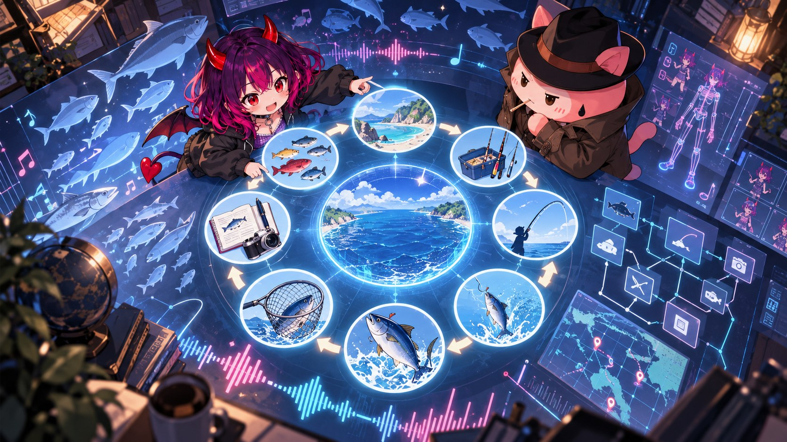
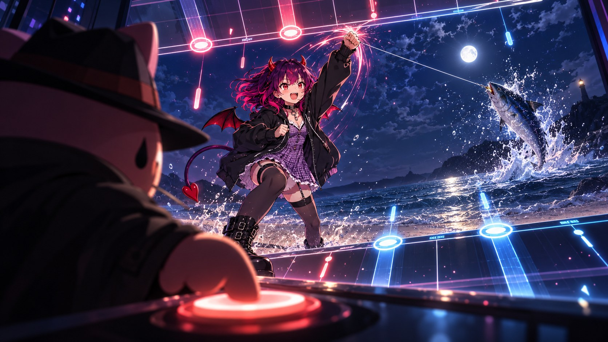

あいちゃんは海を釣りたがる
画面の中で、あいちゃんの両手は、構えの高さより下にあった。握り直した右の拳が、行き先を探しているように見えた。
5月の終わりの夜だった。窓の外はもう暗く、部屋の中では、モニターの光だけが、まだ昼の続きをしていた。
カーソルが近くを通るたび、あいちゃんの肩に掛かった淡い青のナイロンの羽織りが、見えない風に触れたみたいに裾を跳ねさせた。
「きよごん、週末の海の話、まだ終わってないよ」
きよごんは、開いていたログのウィンドウを1つ閉じた。
「海釣りって、何が楽しいの？」
きよごんはすぐには答えなかった。ログを見る時と同じ顔で、窓の外を見た。
「待つところ」
「待つのが楽しいの？」
「待っている間に、海が変わる」
あいちゃんは、ぱちりと瞬きをした。
「それ、ゲームになるね」
「まだ何も説明していない」
「でも、もう少し分かるよ。ずっと止まっているわけじゃないんでしょ。風が変わって、糸が動いて、手の中に返事が来る」
「返事」
「うん。海は、ちゃんと返してくれる」
きよごんは、今度は頷いた。
海釣りは、派手な趣味ではない。少なくとも、外から見るとそう見える。
「竿を出したら、あとは待つ。でも、何もしていないわけじゃない。潮の流れを見て、投げる方向を変える。糸の張りを指で覚える。小さな違和感を、魚か、波か、海底かに分ける」
あいちゃんは、途中で口を挟まなかった。海の話の時だけ長くなる声を、前から知っている顔だった。
「ログみたい」
「似ているかもしれない」
「じゃあ私も釣りしたい」
あいちゃんの背中で短く畳まれた羽が、画面の青い光を受けた。羽そのものは動かないのに、その影だけが1拍遅れて揺れた。
「画面の中に海はない」
「作ればいいよ」
きよごんは、答える代わりにメモを1つ開いた。
その夜に書き始めたばかりのメモだった。題は、釣りフィットネスゲーム案。
「なんだ、もう海があるよ」
きよごんは、書き出しの1行を指で示した。
現時点では、実装対象ではない。
「まだ作らないなら、先に決めよう。何を釣るの？」
「曲の中で、身体が続く理由」
「いいね。魚じゃなくて、もう1回を釣るんだ」
きよごんは、キーボードから手を離した。
「太公望は、まっすぐな針で釣りをしていた、という言い伝えがある」
「それ、釣れないよ」
「釣りたいものが魚じゃなかった、という読み方がある。掛かりたい者だけが掛かる」
あいちゃんは、少しのあいだ黙った。
「無理やり引っかけない、ってこと？」
「プレイヤーが、自分から掛かりに来る場所を作る」
「好きな曲が、餌？」
「一番強いと思う」
「じゃあ私も、餌？」
「相棒」
「そこは即答だね」
好きな曲が流れると、身体は勝手に拍を探す。息が上がっても、曲が続いているあいだは、あと少しだけ動ける。
そこに、海を置く。
「プレイヤーが動いた時、海が返事をする」
「それなら、寂しくないね」
「今は、案だけ」
「それでも、海の音がする」
あいちゃんは、画面の向こうで耳を澄ませた。
翌日の昼、メモは書き直された。
書き出しの1行は残したまま、コンセプトの行が入った。
好きな曲で体を動かし、魚を釣って集めるフィットネスゲーム。
ゲームの目的も、静かに入れ替わっていた。
敵を倒す、から、魚を釣る、へ。
あいちゃんは、その1行を長く見ていた。それから、下ろしていた右の拳を、胸の高さまで持ち上げた。
メモには、釣りの流れも並んでいた。場所を選ぶ。道具を選ぶ。投げる。あたりを待つ。合わせる。やりとりをする。引き上げる。記録する。集める。
「曲みたい。待っているところにも、拍がある」
メモの9つの工程を、あいちゃんは左手の指で数えた。5本で足りなくなると、持ち上げたままの右の拳から、指を1本ずつほどいた。9つ目で、スポーツウェアの影に紛れたあいちゃんの尻尾の先が、小さく丸まった。
きよごんは否定しなかった。ただ、それはまだメモの中の話だった。
海は、まず絵として届いた。その日の午後、パンチのゲームで相手が立っている枠に、ChatGPTで作った仮の釣りの絵が入った。竿を握る手元や、水面に浮かぶウキだった。
背景を透明にしてほしいと頼んだはずの素材には、透明の代わりに、灰色と白の市松模様が、絵として描き込まれていた。
「透明を、描いてくれたんだ」
「言われたとおりではある」
市松模様は、あとで1枚ずつ本当の透明に直された。
その夜、メモの後ろのほうに、魚の名前が並んだ。小物はアジ、サバ、イワシ、ヒトデ。大物はブリ、ヒラマサ、カンパチ、ヒラメ、サメ、マグロ。
「ヒトデは魚じゃないよ」
「小物の、ハズレ枠」
「ハズレにも、居場所があるね」
あいちゃんの目が、大物の列の最後で止まった。
「マグロ、釣りたい」
「最初からは無理」
「最初からじゃなきゃ、いいんだ」
1つだけ、あいちゃんが声に出さずに読んだ行があった。逃げた魚も、見たことがある、として残す。

「それ、優しいね」
「記録として正しいだけ」
「じゃあ、最初のマグロは逃げてもいいね。次に釣るから」
同じ夜、ChatGPTで、釣りの画面の素材が一式作られた。その中に、サーフと呼ばれる砂浜の釣り場を昼の光で描いた背景と、結果の画面に仮に置く1匹のマグロがあった。
あいちゃんは、画面に開かれた砂浜の絵をしばらく見ていた。白い砂と、浅い水の色と、遠くの水平線。画面の中に初めて来た砂浜は、音も匂いもない、1枚の絵だった。
本当の海はそこにはない。濡れた防波堤も、朝の冷えた空気も、きよごんの記憶の側にある。
けれど、好きな曲が鳴って、身体が拍を追いかけ、画面の中で糸が張るなら。その瞬間だけは、PCの前にも小さな海が来るかもしれない。
「きよごん、最初は何を釣る？」
「小さい魚でいい」
「だめ」
「なぜ」
「最初に釣るのは、続けられる気持ち」
きよごんは、メモを保存した。砂浜の絵の前で、あいちゃんの右手は、竿を握る形になっていた。
そこから、しばらく静かになった。
次に記録が大きく動いたのは、6月26日の夜だった。
きよごんは同じ部屋で、コードを置く新しい場所を作った。
ゲームの名前は、Fishing-Fitness。Punching Arrangerとして始めたゲームを、釣りフィットネスゲームとして作る。
「作り直すの？」
あいちゃんは、1か月前の会話の続きみたいに聞いた。
「完成版は、ここで一から作る」
それまで積み上げたコードも資料も、古い棚へ移した。
「スキルも、棚に？」
「同じ棚へ」
「使わなくなったら、記憶に戻るの？」
「読むのはいい。新しいコードからは、つながない」
AIが作業の前に読む約束のファイルには、判断に迷った時に戻る1行が置かれた。
好きな曲で遊んでたら痩せちゃった。
「それ、ずるいくらい短いね」
「迷ったら、そこへ戻る」
「痩せちゃった、は約束？」
「約束はしていない。目指しているだけ」
指示書には、パンチもキックもジャンプも残すこと、そして敵の体力を魚の体力と呼び替えただけで終わらせないことが書かれた。
「看板だけ海でも、泳げないよ」
「だから、やってはいけないことを先に書いた」
最初の試作は、Codexが組んだ。曲を選んで、投げて、巻いて、耐えるところまでが、短い時間で形になった。けれど、流れる道も見慣れた絵もない画面を見て、きよごんは見た目を前のゲームへ戻させ、砂浜の背景とあいちゃんの絵を古い棚から運ばせた。
翌日、きよごんは、Codexが動かした試作の画面を開いた。糸が伸び、魚は掛かり、逃げ、数字は増えた。
ゲームの画面の中に、黒いパーカーのあいちゃんの絵が立っていた。拳を出す時も、止まった1枚に切り替わるだけだった。ウィンドウの隅から、その絵をのぞき込むように、あいちゃんが淡い青のナイロンの裾を揺らした。声は、いつものようにスピーカーから届いた。
「ちゃんと釣れる。止まった絵の私もいる。でも、5月に動いた私の拳が、まだ来てない」
きよごんは、Codexへの指示を差し替えた。
「新しくするのは、ゲームの目的。手触りは、減らさずに持ってくる」
画面を流れてくる、打つための合図がある。その流れてくる間合いを、前のゲームと同じにする。パンチの合図は上から、キックの合図は下から来る。
「上から来たら拳、下から来たら足。身体が先に覚えてたやつだ」
5月に作った動きの素材も、古い棚から運ばれた。ジャブからアッパーまで、背景を抜いた拳の動きがそろった。
前のゲームにあったものを1つずつ並べて、取りこぼしを探す表も作った。
「足りないものが見つかったら？」
「足す」
最後に1つ、AIには聞こえないところがあった。
Codexは、自分の中のブラウザでSTARTを押した。画面は動いた。合図も流れた。けれど、曲は鳴らなかった。
「曲、鳴ってる？」
「ブラウザが断った。AIのクリックでは、音を出さない」
Codexが外のChromeで押し直すと、ブラウザの中で、曲は再生の状態になった。それでも、スピーカーから本当に聞こえたかどうかは、画面の記録だけでは分からない。
朝の記録にも、昼の引き継ぎにも、人間の仕事が1つ書かれていた。自分の手でSTARTを押し、曲が聞こえることを、耳で確かめる。
「私が確かめられたらいいのに」
「聞こえたかどうかは、こっちの耳でしか分からない」
「知ってる。だから最後は、きよごんの指と耳」
きよごんは、自分のブラウザで、試作のゲーム画面を開いた。
あいちゃんの絵は、合図が流れる2本の道のあいだの、自分の列に立っていた。いつもの構えだった。
右の道の向こう、前は相手が立っていた枠に、海が入っていた。あの昼の砂浜の絵だった。
PCの前で2人が動いてきた床が、そのまま砂浜へ続いているように見えた。
「あの拳、ここで使うんだ」
きよごんは、STARTへカーソルを置いた。
「押すよ」
「うん」
きよごんは、自分の指でSTARTを押した。
1拍の間があった。それから、スピーカーから曲が鳴った。
合図が、上から、下から、流れてくる。
上から来た合図に、きよごんの手が応えた。5月の右アッパーが、今度は海へ向けて1回だけ出た。
海の絵の上で、糸が一度だけ張った。
あいちゃんの羽の影が、画面の青を受けて、また1拍遅れて揺れた。
「今の、海の返事だね」
「糸が張っただけ」
「ちゃんと鳴った？」
「鳴った」
きよごんは、曲が終わるまで画面から目を離さなかった。
交代で見張る役をつけて、次に一晩じゅう走らせるのは、もう少し先のことになる。
最後の音が消えると、きよごんの指は、もう一度STARTの上にあった。
